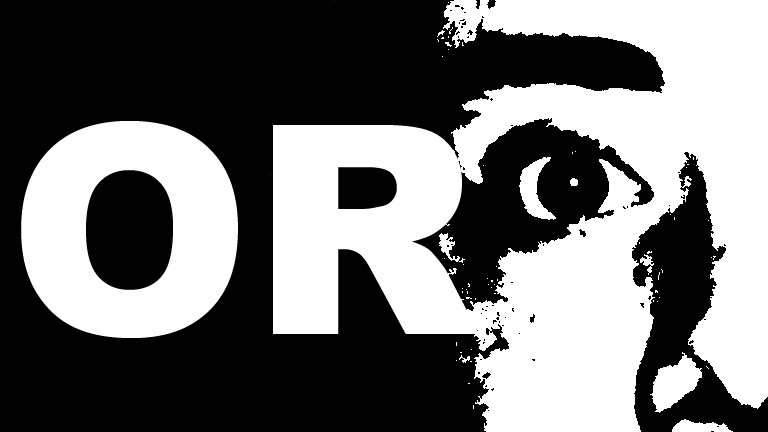

Live or Die
An early avant-garde feature whose surreal, experimental, and fractured narrative established the direction of Trevor Juenger’s later work.

An early avant-garde feature whose surreal, experimental, and fractured narrative established the direction of Trevor Juenger’s later work.